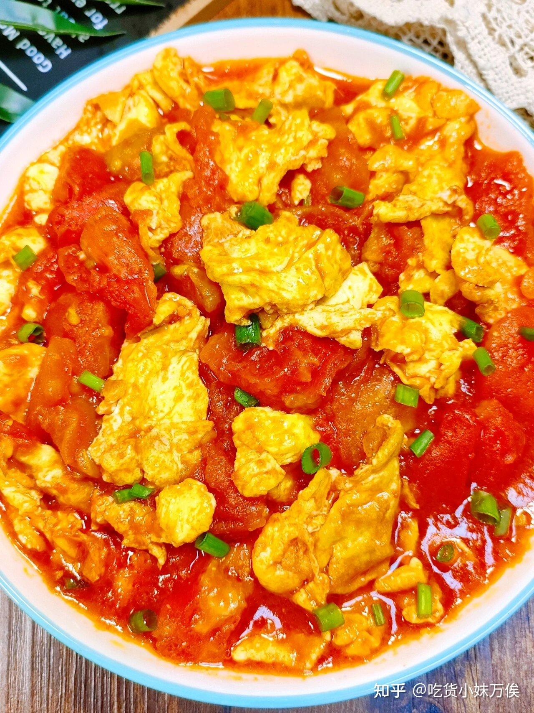

首页
西红柿炒鸡蛋

描述
西红柿炒鸡蛋，又名番茄炒蛋，是一道以西红柿和鸡蛋为主要食材烹制而成的经典家常菜
配料
- 鸡蛋 3个
- 西红柿 2个
- 葱 1根
- 蒜 1瓣
- 盐 适量
- 糖 适量
步骤
- 准备好所需材料
- 在西红柿顶部划两刀，放入开水中烫一分钟便可去皮
- 切成滚刀块
- 准备好葱花和蒜末
- 鸡蛋磕入碗中，加少许盐，打散
- 锅烧热，倒油，油要适当多一些
- 油热后，关小火，倒入蛋液，待蛋液还未完全凝固时，关火，这样鸡蛋才滑嫩
- 用筷子把鸡蛋划散
- 鸡蛋炒好后盛出来，避免继续受热变老
- 倒入少许底油，关小火，爆香蒜末
- 倒入西红柿块，用中火翻炒，才能炒出更多的汤汁
- 炒出汤汁后，加入适量盐和白糖调味
- 再倒入鸡蛋，快速翻炒均匀
- 若汁水过多，可以勾点芡汁
- 出锅装盘，撒上葱花作点缀